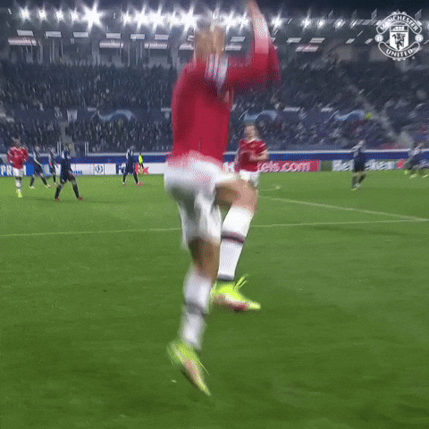
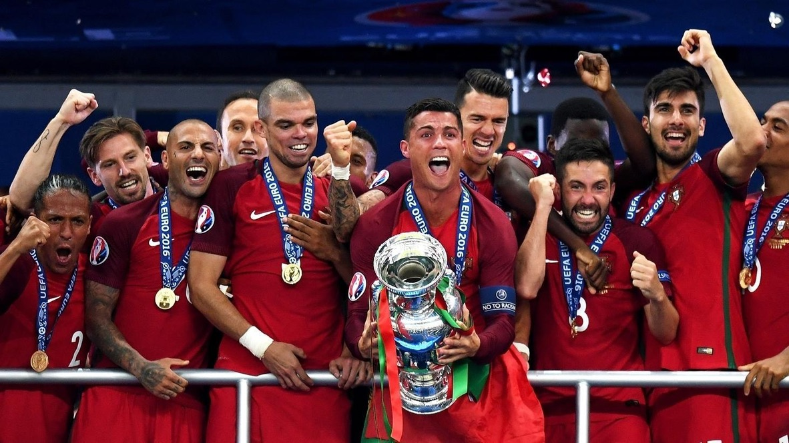
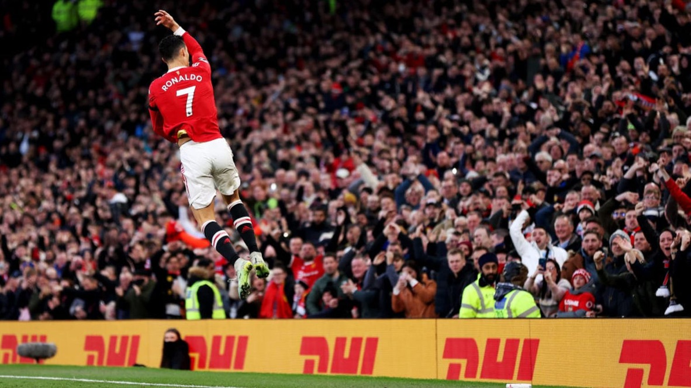
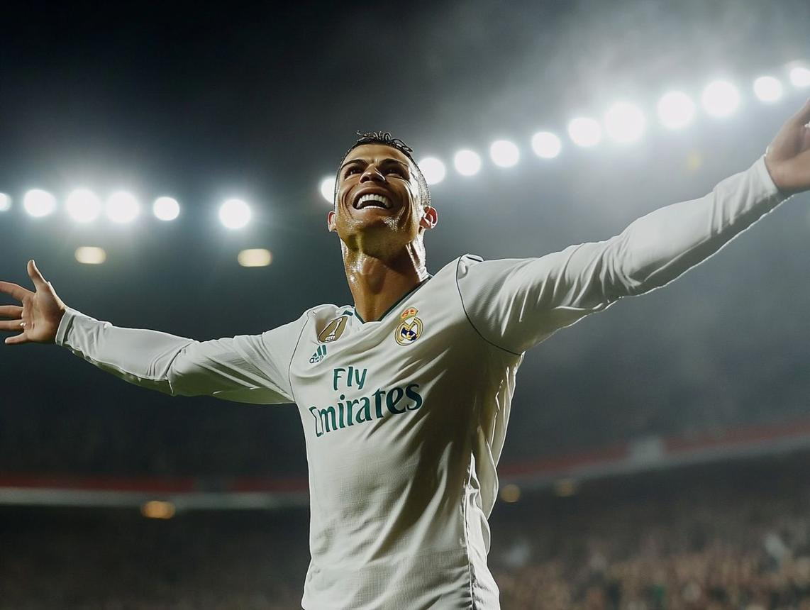
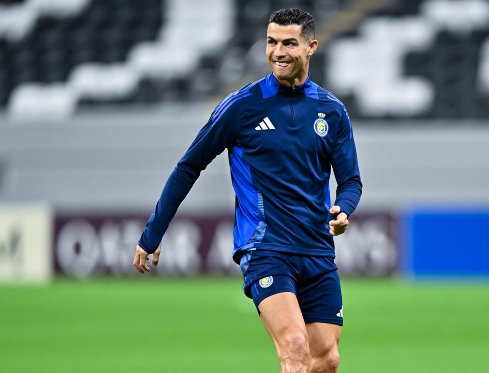

Portugal Legend
20/02/2018Ronaldo’s impact on Portugal football is unforgettable. His leadership helped Portugal win major international trophies and inspired a new generation of players.

Explore the career, records, lifestyle, and unforgettable moments of one of football’s greatest icons.
Explore More
Cristiano Ronaldo is one of the greatest footballers of all time, known for his discipline, confidence, and incredible goal-scoring ability. From a young player in Madeira to a global football icon, his journey shows the power of hard work, sacrifice, and belief.
Throughout his career, Ronaldo has played for some of the world’s biggest clubs, including Manchester United, Real Madrid, Juventus, and Al Nassr. His achievements include multiple Champions League titles, Ballon d'Or awards, and record-breaking goal numbers.
What makes Ronaldo special is not only his talent, but also his mindset. He is famous for his fitness, training routine, leadership, and hunger to keep improving even after reaching the top level of football.
Today, Ronaldo’s legacy goes beyond the pitch. He inspires millions of fans around the world through his dedication, success, and never-give-up attitude, making him a true symbol of greatness.
Ronaldo’s impact on Portugal football is unforgettable. His leadership helped Portugal win major international trophies and inspired a new generation of players.

With hundreds of career goals, Ronaldo has become one of football’s most dangerous and consistent goal scorers across clubs and countries.

Ronaldo’s Champions League performances made him one of the most iconic players in the history of European football.

Ronaldo’s dedication to fitness and improvement is one of the biggest reasons behind his long-lasting success.
His famous celebration has become one of the most recognised moments in world football.
Ronaldo has built his reputation by performing in big games and delivering under pressure.
His journey continues to inspire fans, athletes, and young footballers around the world.